These are the three secret clawed tools that change how I automate my trading. And one of them is already running trades while I sleep. Not a bot I bought. Not a signal group I'm paying for. Something I built myself, in plain English, with zero coding background. It's scanning 33,000 wallets on Hyperliquid, reading my trading view charts, and executing trades off a text message on my phone. This isn't AI hype. It's happening right now, and most traders have no idea it's even possible. While everyone's still glued to charts trying to catch the next move manually, a small group of solo traders have quietly built systems that do
Interface & Outils : TradingView, terminal de commandes (Claude Code), et navigateur web (Medium).
Contenu textuel & Code : Graphique de trading avec indicateurs et boîtes de prix, interface CLI avec un prompt demandant d'utiliser le MCP TradingView, et un article de blog illustré.
Action / Démonstration : Utilisation d'un assistant IA via le terminal en conjonction avec des graphiques de trading pour automatiser des analyses.
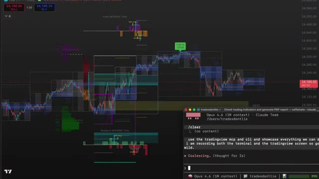
🔍 Agrandir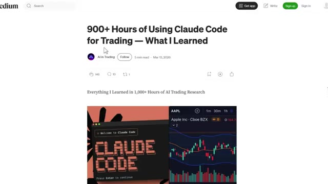
🔍 Agrandirit for them 24-7 without ever getting tired or emotional, and I'm one of them. So in this video, I'm breaking down the exact three Claude tools running my entire trading operation on autopilot. By the end, you'll know exactly how to build the same system yourself. Let's get into it. The first thing I want to show you, and this is the one that genuinely blew my mind the first time I saw it. Claude reads the price history, identifies the most significant levels, draws them directly on your chart, and tells you which ones matter most right now.
Interface & Outils : Terminal de commandes Claude Code et interface de graphiques boursiers TradingView.
Contenu textuel & Code : Interface CLI Claude Code et graphique des prix du contrat perpétuel BTCUSDT.
Action / Démonstration : Exécution d'un outil de ligne de commande et visualisation de graphiques de trading.
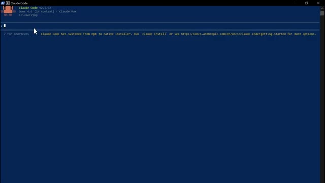
🔍 Agrandir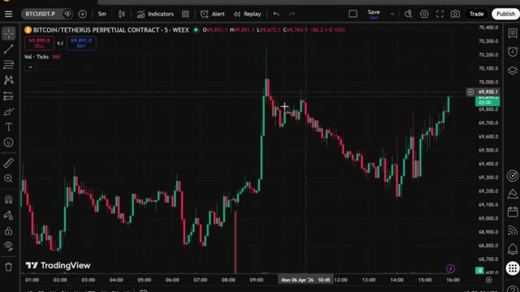
🔍 AgrandirWatch the chart. Green lines for support, red lines for resistance, price labels. Number of times each level has been tested, all drawn automatically, and then it tells you exactly where price is sitting right now relative to those levels and gives you a directional bias based on the history of how price has reacted at each one. This used to take me 20 minutes to map out manually on every chart. Claude does it in seconds. And that is just the starting point.
Interface & Outils : TradingView, Terminal de commande / Interface CLI.
Contenu textuel & Code : Lignes de support (S1 à S5) et de résistance, nombre de tests par niveau, prix actuel (69,899), et analyse textuelle du biais prudent (cautiously bearish).
Action / Démonstration : Analyse technique automatisée des niveaux de prix et affichage des scénarios potentiels de rebond ou de cassure.
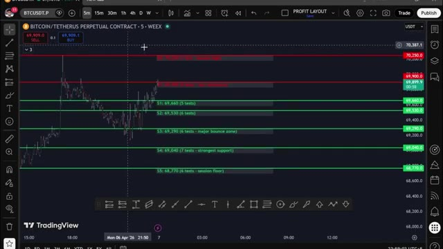
🔍 Agrandir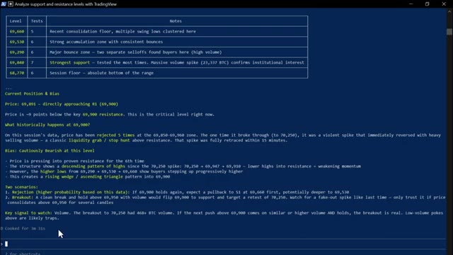
🔍 Agrandir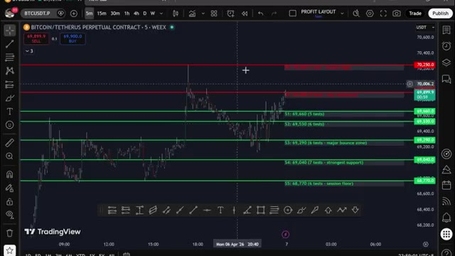
🔍 AgrandirYou can also have Claude write full PineScript strategies from plain English, debug your existing indicators, run a full multi-timeframe confluence analysis across the weekly, daily, four-hour, and one-hour simultaneously, and get a specific trade recommendation with entry, stop loss, and take profit, all from one prompt. But here is where it becomes fully hands-free. You can connect any of these strategies directly to your exchange through a trading view webhook. When your strategy fires a signal on trading view, Claude receives it instantly through the webhook and executes the trade automatically on your
Interface & Outils : Terminal de commandes (Claude Code session / Bash)
Contenu textuel & Code : Un tableau de ventilation multi-timeframe (Weekly, Daily, 4-Hour, 1-Hour) détaillant l'EMA Trend, le RSI(14), le MACD Hist, le prix par rapport aux EMA et le biais global. Sont également affichés les niveaux clés (résistances et supports journaliers), le score de confluence (3/4 Bullish) et une recommandation de trade LONG avec les niveaux d'entrée, de stop loss, de take profit et le ratio R:R.
Action / Démonstration : Exécution d'un script d'analyse technique multi-timeframe (mtf_analysis.py) affichant les résultats et recommandations de trade directement dans le terminal.
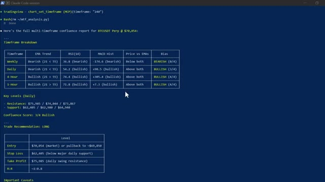
🔍 Agrandirexchange. Entry, stop loss, take profit, all done. Without you touching anything, signal came in. Claude processed it trade open confirm back with every detail you build the strategy once and from that point it runs itself now This next section. This is where it gets really interesting. And honestly, this is one of my favorite things I have built with Claude. What if you could scan 33,000 wallets on hyperliquid find the top 20 most profitable traders see exactly what they're buying right now Their entry prices their leverage their unrealized P&L and get a complete trade plan based on all of it
Interface & Outils : Terminal de commandes (CLI) exécutant des scripts Python d'interaction avec l'API WEEX.
Contenu textuel & Code : Commandes Bash exécutant `weex_contract_api.py`, suivies d'un tableau récapitulatif pour une position LONG sur ETH (Side: LONG, Size: 0.024 ETH, Entry Price: $2,052.00, Leverage: 5x, Take Profit: $2,216.16, Stop Loss: $1,990.44).
Action / Démonstration : Exécution automatisée d'un ordre de trading via l'assistant Claude, plaçant une position LONG avec niveaux de take profit et stop loss configurés.
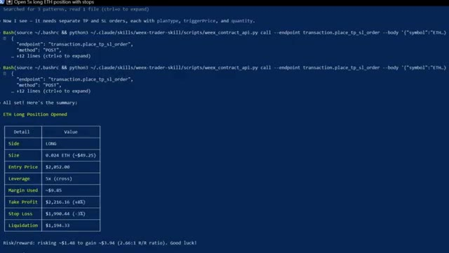
🔍 Agrandirpas besoin de clés API, pas de code, pas de recherche manuelle. Maintenant, Hyperliquid, très rapidement, c'est un échange perpétuel décentralisé qui fonctionne sur sa propre blockchain. Pas de KYC, pas d'intermédiaire. Et comme c'est entièrement sur la chaîne, chaque transaction, chaque position, chaque portefeuille, tout est public. C'est ce qui rend cela possible. Très bien, laissez-moi ouvrir Claude Code et vous montrer cela en direct. Voici la première chose que je veux vous montrer. Claude analyse les 20 portefeuilles les plus rentables sur Hyperliquid en ce moment, extrait chaque position ouverte et les classe par rentabilité totale.
Interface & Outils : Application Web Hyperliquid (app.hyperliquid.xyz/trade)
Contenu textuel & Code : Graphique en chandeliers japonais de la paire HYPE/USDC avec indicateur de volume, carnet d'ordres (Order Book) en temps réel, panneau de passage d'ordres (Limit/Market) et onglets de navigation (Trade, Portfolio, Earn, Vaults, Staking).
Action / Démonstration : Navigation et présentation de l'interface de trading décentralisée de la plateforme Hyperliquid.
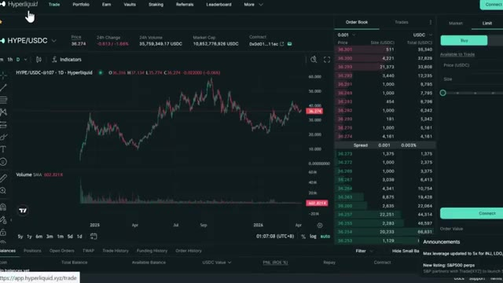
🔍 AgrandirTout en un seul coup. Regardez ce qui se passe. Claude interroge les points de terminaison publics d'Hyperliquid, commence à extraire les données de portefeuilles de 33 000 adresses, les classe par rentabilité et commence à rédiger le rapport. Vous pouvez le voir traiter les portefeuilles en temps réel. Les prix d'entrée, l'effet de levier, les profits et pertes non réalisés, tout arrive en direct. Et voici le résultat. Les 20 principales « whales », ou baleines, classées, chaque position ouverte répertoriée.
Interface & Outils : Terminal de commandes (CLI) / Fenêtre de script.
Contenu textuel & Code : Données JSON au format texte brut montrant des informations de portefeuilles (adresse, display_name, account_value, pnl_alltime, roi_alltime, positions sur BTC, ETH, SOL, LTC avec direction SHORT/LONG, taille, prix d'entrée, PnL non réalisé, effet de levier et prix de liquidation).
Action / Démonstration : Extraction et affichage en temps réel des données des portefeuilles et de leurs positions par le script de traçage de baleines Hyperliquid.
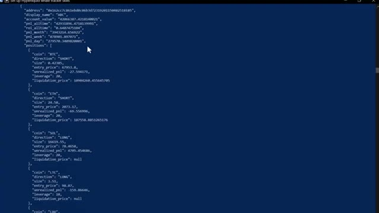
🔍 AgrandirEt tout en bas, le résumé du sentiment global. En ce moment, l'argent intelligent est acheteur net sur Bitcoin et vendeur net sur presque tout le reste, en particulier Ethereum. C'est le genre de signal qui prenait autrefois des heures à assembler manuellement. Claude le fait en moins d'une minute. Maintenant, c'est là que ça devient vraiment intéressant. Ce prompt compare les 20 portefeuilles les plus rentables aux 20 portefeuilles les plus perdants et trouve chaque jeton sur lequel ils se trouvent de part et d'autre de la transaction. Regardez-le extraire les deux groupes simultanément. Les portefeuilles rentables d'un côté, les portefeuilles perdants de l'autre, et puis il
Interface & Outils : Terminal de commandes CLI (fenêtre de type PowerShell ou invite de commandes sur fond bleu).
Contenu textuel & Code : Listes textuelles détaillant les positions (Strong Bearish / Strong Bullish Consensus) sur des cryptomonnaies comme APT, TRX, LIT, KPEPE, XRP, SUI, ainsi qu'une section de résumé intitulée 'Overall Net Direction' indiquant que les positions majeures sont short sur ETH et long sur BTC.
Action / Démonstration : Affichage des résultats d'analyse synthétique générés par un script de suivi des baleines (Hyperliquid whale tracker).
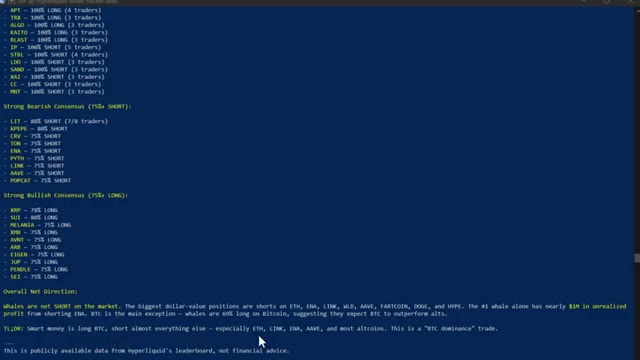
🔍 Agrandircommence à croiser les positions. Voici le résultat. Vous pouvez voir là où les deux groupes sont d'accord. Ils sont tous les deux acheteurs sur suey, donc c'est un trade encombré. Mais regardez ça. L'argent intelligent est massivement acheteur sur XMR, TRX, Pendle et Farcoin, tandis que les traders particuliers sont vendeurs sur ces cryptos. Cette divergence exacte, c'est le signal. C'est le genre d'analyse pour laquelle les hedge funds paient. Vous l'obtenez grâce à un outil d'IA à 20 dollars et une API publique gratuite. Et si vous voulez la configuration hyperliquid complète, le code de compétence, chaque prompt, le système complet de suivi des baleines, je vais vous dire exactement comment obtenir tout cela dans
Interface & Outils : Interface de terminal informatique affichant des données textuelles et tabulaires formatées.
Contenu textuel & Code : Tableaux avec colonnes Token, Smart % Long, Rekt % Long et Note, incluant des actifs comme BTC, SUI, SOL, XRP, DOGE, ARB, HYPE, MON, NEAR, AVAX, WLD, ZEC, VIRTUAL, TON, ZRO. Un curseur de souris est visible sur la ligne SUI indiquant 'Perfect agreement'.
Action / Démonstration : Analyse comparative des positions des portefeuilles 'Smart Money' versus 'Rekt' pour illustrer les accords et désaccords de marché.
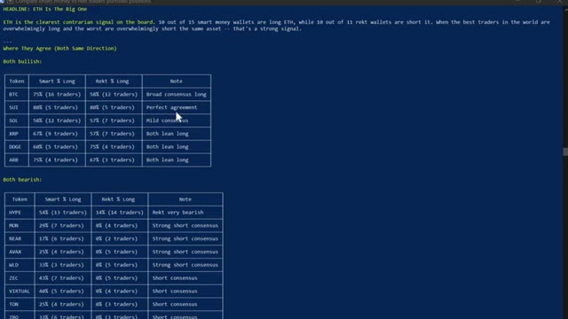
🔍 AgrandirUn instant. Continuez à regarder. Maintenant, celui-ci, c'est celui qui a complètement changé ma routine quotidienne. J'ai créé mon propre assistant de trading IA en utilisant Claude et Telegram, et il trouve des transactions rentables pour moi en utilisant l'IA la plus puissante disponible actuellement, plus intelligente que n'importe quel humain ne pourrait l'être. Il exécute des transactions, gère mes positions, m'envoie des alertes en temps réel et génère des rapports de portefeuille complets, le tout à partir d'un simple message sur mon téléphone. Ce matin, j'ai passé un ordre depuis mon lit, j'ai pris mes bénéfices depuis la salle de sport, sans toucher à un seul graphique. C'est Claude qui tourne sur mon ordinateur. Il
Interface & Outils : Présentation ou face-caméra explicatif du trader sans interface logicielle partagée.
Contenu textuel & Code : Explications orales des stratégies et mise en contexte méthodologique du marché.
Action / Démonstration : Explications face caméra et analyse conceptuelle des marchés.
Ça a l'air simple. Juste une interface textuelle. Mais regardez ce que ça peut faire. Vous pouvez pratiquement ouvrir une position de trading avec une seule phrase. Ouvrir un long fois cinq sur l'ETH avec 10 dollars. Définissez un stop loss à moins trois pour cent et un take profit à plus huit pour cent. Regardez-le réfléchir. Et voilà. Position ouverte. Stop loss défini.
Interface & Outils : Terminal de commandes (Claude Code v2.1.91)
Contenu textuel & Code : En-tête du terminal affichant "Claude Code v2.1.91", le modèle "Opus 4.6 (1M context) - Claude Max", le répertoire utilisateur et un champ de saisie de texte avec un curseur actif.
Action / Démonstration : Saisie en cours dans l'interface textuelle pour exécuter des commandes ou rédiger un ordre de trading via un prompt.
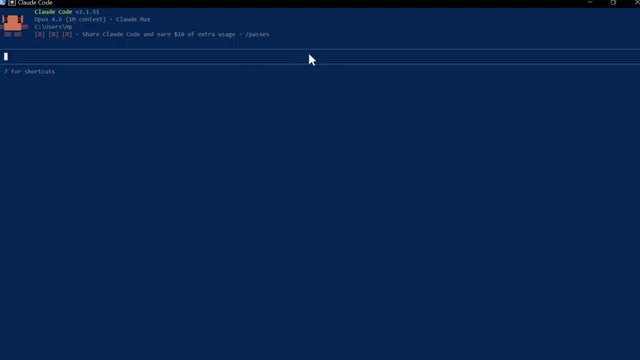
🔍 AgrandirPrise de bénéfices configurée. Confirme le retour avec chaque détail. Une phrase. Terminé. Maintenant, laisse-moi te montrer quelque chose qui m'a vraiment époustouflé la première fois que j'ai exécuté ceci. Donne-moi un tableau de bord complet de portefeuille. Toutes mes positions, profits et pertes, frais de financement, courbe de capital sous forme de rapport visuel. Regarde-le agir.
Interface & Outils : Interface de courtier en cryptomonnaies (WEEX) et terminal de commandes (CLI / Claude Code).
Contenu textuel & Code : Paire ETH/USDT, position longue avec levier 5x, prix d'entrée à 2052.00$, Take Profit à 2,216.16$ (+8%), Stop Loss à 1,990.44$ (-3%), ratio R/R de 2.66:1, et invite de commande demandant un tableau de bord complet du portefeuille.
Action / Démonstration : Configuration d'ordres de prise de bénéfices (TP/SL) et exécution de requêtes via le terminal de commande pour afficher les détails du portefeuille.
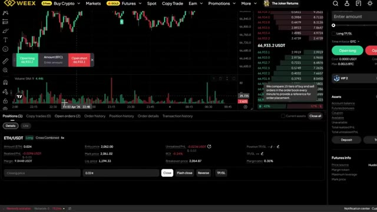
🔍 Agrandir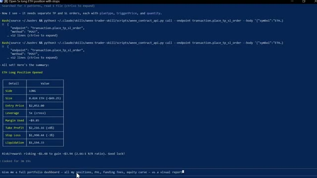
🔍 AgrandirIl extrait toutes les données de mon compte en ce moment même. Et voici ce qu'il génère. Un tableau de bord complet en mode sombre. Une courbe de capital. Le taux de réussite. Le revenu de financement ventilé par pièce, chaque position ouverte avec la distance de liquidation mise en surbrillance, c'est le genre de rapport qu'un desk de trading professionnel produirait, je l'ai obtenu en quelques secondes à partir d'une seule consigne et, soit dit en passant, si vous trouvez cela utile jusqu'à présent, restez jusqu'à la fin parce que je vais vous montrer comment configurer tout cela vous-même, continuez à regarder, très bien, laissez-moi vous montrer
Interface & Outils : Tableau de bord personnalisé "WEEX Portfolio Dashboard" en mode sombre.
Contenu textuel & Code : Métriques de portefeuille ($20.61 d'équité, PnL non réalisé de -$0.021, taux de réussite de 25%), graphiques de PnL et de capital, répartition de marge et tableau des opportunités de taux de financement (UNI/USDT, SEI/USDT, BCH/USDT, etc.).
Action / Démonstration : Présentation et explication détaillée des performances du compte de trading et des données extraites par l'outil automatisé.
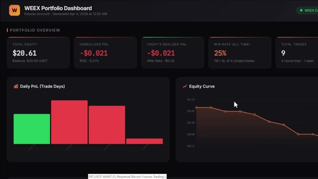
🔍 Agrandir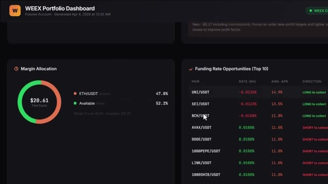
🔍 AgrandirDe plus, vous pouvez également connecter ceci à votre Telegram pour envoyer des commandes directement depuis votre téléphone. Vous pouvez taper : analyser toutes les paires futures et trouver les taux de financement les plus élevés en ce moment. Il a analysé chaque paire, les a classées par taux de financement, a calculé le rendement annualisé, et m'a indiqué exactement dans quelle direction me positionner pour percevoir ce financement instantanément. Maintenant, si vous ne savez pas ce que sont les taux de financement, il s'agit essentiellement d'argent gratuit que l'échange verse toutes les huit heures aux traders positionnés du bon côté du marché. Lorsque le financement est positif, les acheteurs paient les vendeurs. Lorsque
Interface & Outils : Présentation ou face-caméra explicatif du trader sans interface logicielle partagée.
Contenu textuel & Code : Explications orales des stratégies et mise en contexte méthodologique du marché.
Action / Démonstration : Explications face caméra et analyse conceptuelle des marchés.
Le financement est négatif, les positions courtes paient les positions longues. Et certains de ces taux sont extrêmement élevés. Ce que fait ce scanner, c'est trouver les paires où ce taux est le plus élevé, calculer ce que cela donne sur une base annuelle, parfois 50 %, 100 %, voire plus, et vous dire exactement dans quelle direction ouvrir une position pour vous asseoir et percevoir ce paiement toutes les huit heures. Vous n'essayez même pas de prédire la direction du prix.
Interface & Outils : Application de messagerie Telegram et plateforme d'échange de cryptomonnaies WEEX.
Contenu textuel & Code : Liste des taux de financement pour les paires de futures (ACTUSDT, DOGEUSDT, APTUSDT, UNIUSDT, etc.) avec leurs pourcentages respectifs, ainsi que des graphiques de trading avec carnet d'ordres et indicateurs de volume (SMA 9).
Action / Démonstration : Présentation des résultats du scanner de taux de financement sur Telegram, puis transition vers l'interface de l'exchange WEEX pour illustrer le placement des ordres ou le suivi des positions.
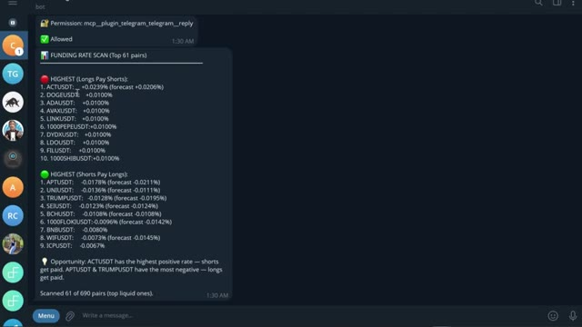
🔍 Agrandir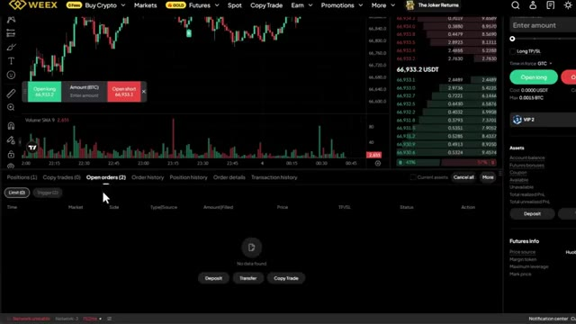
🔍 AgrandirYou are just farming the rate. And now instead of manually checking every single pair yourself, which nobody does, Claude does it in seconds and hands you the opportunity on a plate. Now, if you're ready to take this even further, you can use Claude code to build a fully automated trading bot from start to finish for crypto, stocks, or whatever market you are trading.
Interface & Outils : Plateforme d'échange WEEX et terminal de commande Claude Code
Contenu textuel & Code : Liste de paires de trading USDT-M (XRPUSDT, TRXUSDT, BNBUSDT, NEARUSDT, etc.), graphiques en chandeliers, carnet d'ordres et interface CLI Claude Code Opus 4.6
Action / Démonstration : Navigation dans la liste des paires de cryptomonnaies sur l'échange et affichage du terminal de développement Claude Code
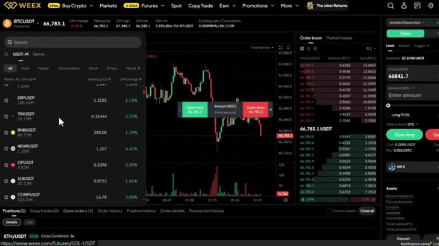
🔍 Agrandir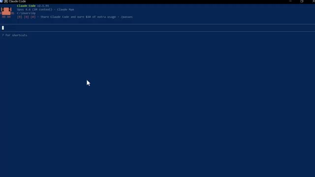
🔍 AgrandirEt honnêtement, c'est ainsi que Claude va changer notre façon de trader pour toujours. Et nous avons déjà fait cela auparavant. Laissez-moi vous montrer à quoi ressemble réellement le résultat final. Voici le tableau de bord, une seule URL, chaque position, votre courbe de capital, l'état de vos bots, vos données sur les baleines, le tout en direct, en un seul endroit. Fini les multiples onglets de navigateur.
Interface & Outils : Page web promotionnelle et tableau de bord de trading WEEX.
Contenu textuel & Code : Métriques de compte (Equity : 19.78, PnL), courbe de capital sur 90 jours et sections pour les positions ouvertes et signaux récents.
Action / Démonstration : Présentation du tableau de bord de trading complet en direct.
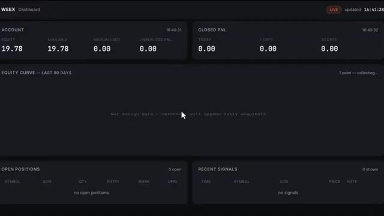
🔍 AgrandirFini les doutes sur les points d'entrée. Et chaque matin, avant même d'ouvrir votre ordinateur portable, ce briefing alpha quotidien est déjà dans votre boîte de réception, tous les jours à l'heure et prêt à être lu. Il a déjà analysé les transactions des baleines, examiné les graphiques, vérifié votre compte, et vous a remis la configuration avec la plus forte conviction de la journée, dimensionnée selon votre risque exact.
Interface & Outils : Terminal de commande et interface graphique TradingView.
Contenu textuel & Code : Tableaux de données de marché (BTC, ETH, SOL), prix, variations 24h, distances par rapport à la moyenne mobile à 200 périodes et RSI. Graphique de prix cryptographique.
Action / Démonstration : Présentation du briefing alpha quotidien automatisé et affichage des graphiques et données techniques associés.
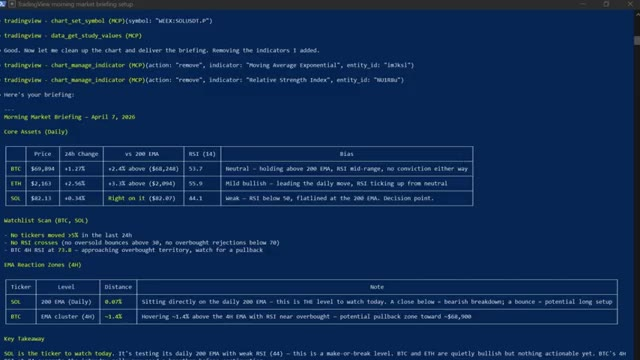
🔍 Agrandir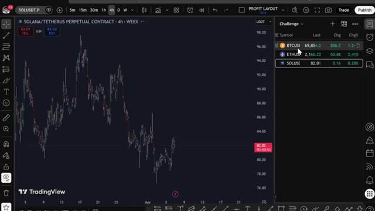
🔍 AgrandirUn seul prompt. Toute la pile technologique. Et le bot lui-même ne se trouve pas sur votre ordinateur portable. Il tourne 24 heures sur 24 et 7 jours sur 7 sur un serveur cloud. S'il plante, il redémarre tout seul. Si votre Wi-Fi se coupe, il continue. Votre ordinateur portable n'est que la télécommande. Désormais, la barrière mathématique pour construire tout cela a pour ainsi dire disparu.
Interface & Outils : Interface web Hostinger, Terminal de commandes / éditeur GNU nano.
Contenu textuel & Code : Sélection de serveurs cloud géographiques et fichier de configuration sshd_config pour un serveur distant. [DESC_ACTION] Configuration d'un serveur cloud distant (VPS) pour héberger le bot de trading 24h/24 et 7j/7.
Action / Démonstration : Explications face caméra et analyse conceptuelle des marchés.
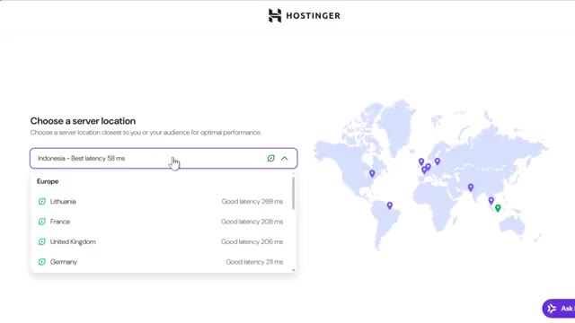
🔍 Agrandir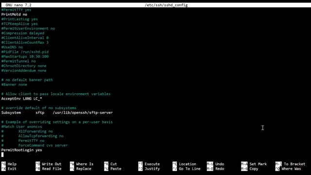
🔍 Agrandiravant des modèles capables comme Claude Code, cela aurait pris des semaines, voire des mois à mettre en place, maintenant vous pouvez passer d'une idée à un système fonctionnel en un après-midi et cela compte parce que la plupart des stratégies ne fonctionnent pas, l'avantage n'est pas d'avoir une seule stratégie parfaite, c'est d'être capable de tester assez d'idées assez rapidement pour trouver celles qui fonctionnent vraiment, très bien, et regardez, pour les prochaines années, deux types de traders existeront : ceux qui utilisent l'IA et ceux qui font encore tout manuellement, même marché, des résultats très différents, voici comment vous mettre du bon côté.
Interface & Outils : TradingView, éditeur Pine Editor, interface de graphique de trading.
Contenu textuel & Code : Code source en Pine Script visible dans l'éditeur (fonctions de gestion des stops ATR, variables de position et signaux d'achat/vente), ainsi qu'un graphique de prix BTCUSDT en unités 4h.
Action / Démonstration : Consultation et écriture de code de stratégie de trading automatisé sur Pine Script avec affichage graphique des signaux d'entrée.
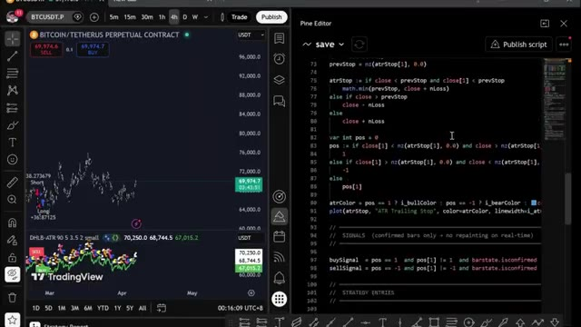
🔍 Agrandirj'ai rassemblé tout ce qui se trouve à l'intérieur de la communauté ai trade edge chaque invite chaque bot chaque modèle chaque guide étape par étape que j'utilise personnellement tout en un seul endroit et tout ce que je construis à l'avenir est ajouté directement dans le groupe au moment où il sort nous testons également des stratégies provenant de tout l'internet en les automatisant à l'aide de pine script en les exécutant en direct et en partageant exactement ce qui fonctionne et ce qui ne fonctionne pas afin que vous n'obteniez pas seulement des outils vous obtenez une opération de recherche en direct à l'intérieur il y a aussi un cours complet de trading agentique de 2,5 heures du débutant à l'expert non
Interface & Outils : TradingView, graphique en chandeliers (2h), indicateur RSI-VWAP.
Contenu textuel & Code : Prix du Bitcoin autour de 77,109 USD, indicateur RSI-VWAP en sous-fenêtre avec signaux d'achat/vente (losanges verts et rouges), encadré de position avec taille, marge et PnL.
Action / Démonstration : Présentation d'un setup de trading et analyse des signaux techniques sur le graphique Bitcoin.
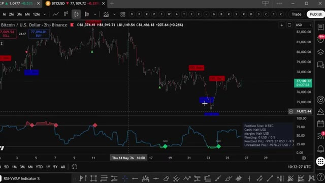
🔍 Agrandiraucune expérience en programmation n'est requise, à la fin, vous aurez votre propre système de trading par IA en direct, ce que la plupart des traders particuliers ne savent même pas être possible actuellement. 79,99 $ par mois. Un seul bon trade suffit pour le rentabiliser. Et les 100 premiers membres bloquent ce tarif définitivement. Après cela, le prix augmentera.
Interface & Outils : Interface web de la plateforme Whop et page de cours hébergée.
Contenu textuel & Code : Offre d'abonnement "AI Trade Edge" à 79,99 $ par mois (réduction de 20 %), description des bots de trading IA inclus, guides et FAQ concernant les marchés actions et crypto via WEEX.
Action / Démonstration : Présentation de l'offre commerciale du cours de trading par IA et des conditions d'abonnement pour les premiers membres.
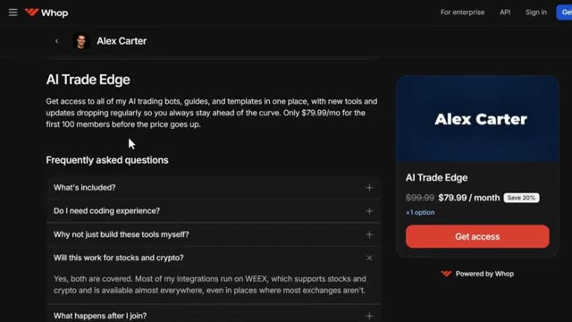
🔍 AgrandirLe lien est dans la description. Vous ne pouvez vraiment pas vous permettre de rater ça. Et c'est tout. C'est ainsi que Claude change le trading pour toujours et comment vous pouvez en faire partie. Si vous voulez approfondir chacun de ces sujets individuellement, la visite guidée complète de TradingView sur Telegram et le suivi des baleines sur Hyperliquid, toutes ces vidéos s'affichent à l'écran en ce moment même, allez les voir à votre rythme et si vous voulez le guide complet étape par étape sur la façon de construire votre propre système de trading agentique en utilisant Claude, cette vidéo s'affiche à l'écran également, allez la voir ensuite, si vous avez trouvé cela utile, laissez un pouce bleu, cela aide vraiment
Interface & Outils : Grand View Research website, Hyperliquid platform leaderboard.
Contenu textuel & Code : Statistiques de croissance du marché du trading algorithmique (taille estimée à 21,06 milliards USD en 2024, projection à 42,99 milliards USD en 2030) et métriques de performance de traders sur Hyperliquid (valeur de compte, PNL en USD, ROI). [DESC_IMAGE_3] Navigation et consultation de données de marché et de classements de traders.
Action / Démonstration : Explications face caméra et analyse conceptuelle des marchés.
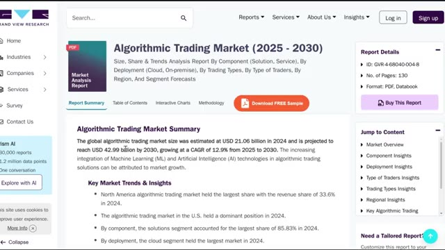
🔍 Agrandir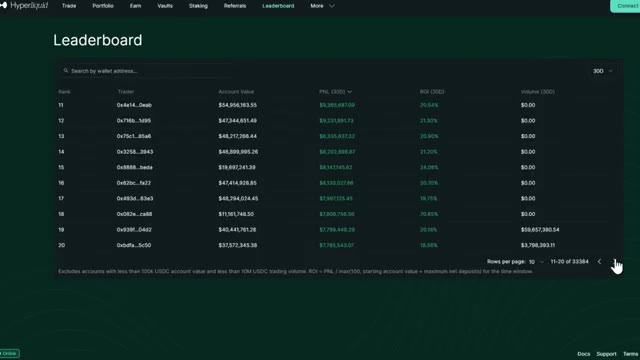
🔍 Agrandiraidez la chaîne abonnez-vous si vous ne l'avez pas déjà fait et je vous vois dans la prochaine
Interface & Outils : Aucun.
Contenu textuel & Code : Aucun.
Action / Démonstration : Aucune.